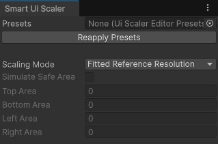
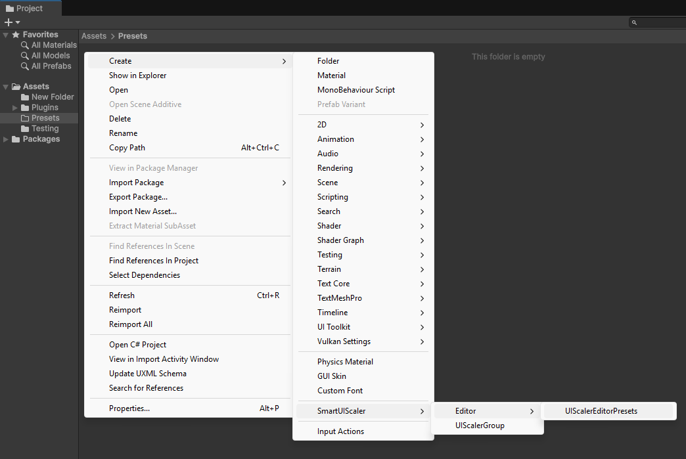
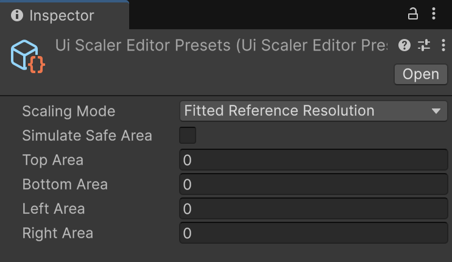

Smart UI Scaler editor window
The Smart UI Scaler window helps to test and debug UI layouts without entering Play Mode. It can be found under "Tools" > "Smart UI Scaler";

Presets field
This field is used to apply preset values to Smart UI Scaler window using presets scriptable object.
To create a new presets scriptable object Right Click on Project Window then navigate to "SmartUIScaler" > "Editor" > "UIScalerEditorPresets".

Warning
UIScalerEditorPresets scriptable object should be placed inside "Editor" folder as this scriptable object only works in Editor.
Presets scriptable object has the same options as Smart UI Scaler window.

Presets options will be applied when Presets scriptable object is selected. They can be reapplied by pressing the "Reapply Presets" button.
The plugin ships with three presets in Demos/Common/Editor: "Preview Presets", "iPhone 12 Portrait Presets" and "iPhone 12 Landscape Presets". The iPhone presets enable the safe area simulation with the notch and home indicator paddings of that device.
Scaling Mode field
Scaling Mode field controls how UI Scalers are scaled in Edit Mode.
| Scaling Mode | Description |
|---|---|
| Fitted Reference Resolution | Sets the size of UI Scalers to reference resolution and scales them to fit inside their Canvases. This mode is recommended for UI development and is most convenient to work with. |
| Reference Resolution | Sets the size of UI Scalers to reference resolution and keeps the scale to represent their reference resolution 1:1 in Unity units. This mode is also intended for UI development. |
| Preview | Enables full UI Scalers resizing that represents how UI Scalers will look like in Play Mode. It is not recommended to edit the inner UI layout when this mode is enabled. |
Note
This field only works in Edit Mode and is ignored in Play Mode. The "Fitted Reference Resolution" and "Reference Resolution" modes center the UI Scaler inside its Canvas and ignore the Alignment option, which only applies in "Preview" mode and in Play Mode.
Simulate Safe Area and Area fields
These fields control the simulated screen safe area. To activate the safe area simulation enable the "Simulate Safe Area" toggle. The Area fields control the virtual displays borders padding around the safe area.
Note
Safe area simulation fields also work in Play Mode.